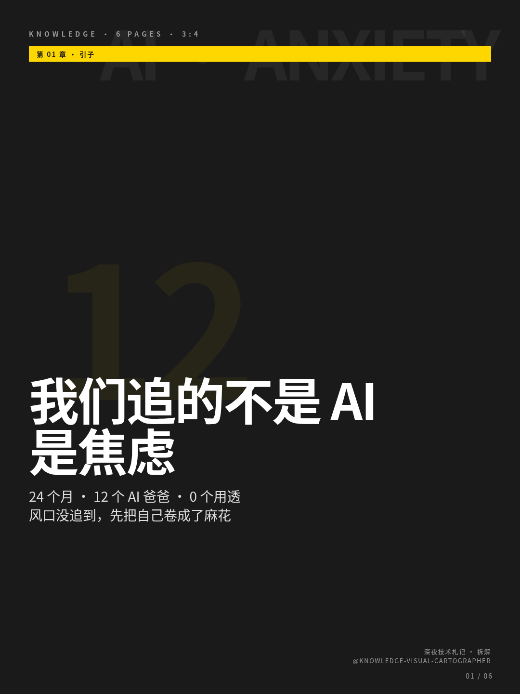
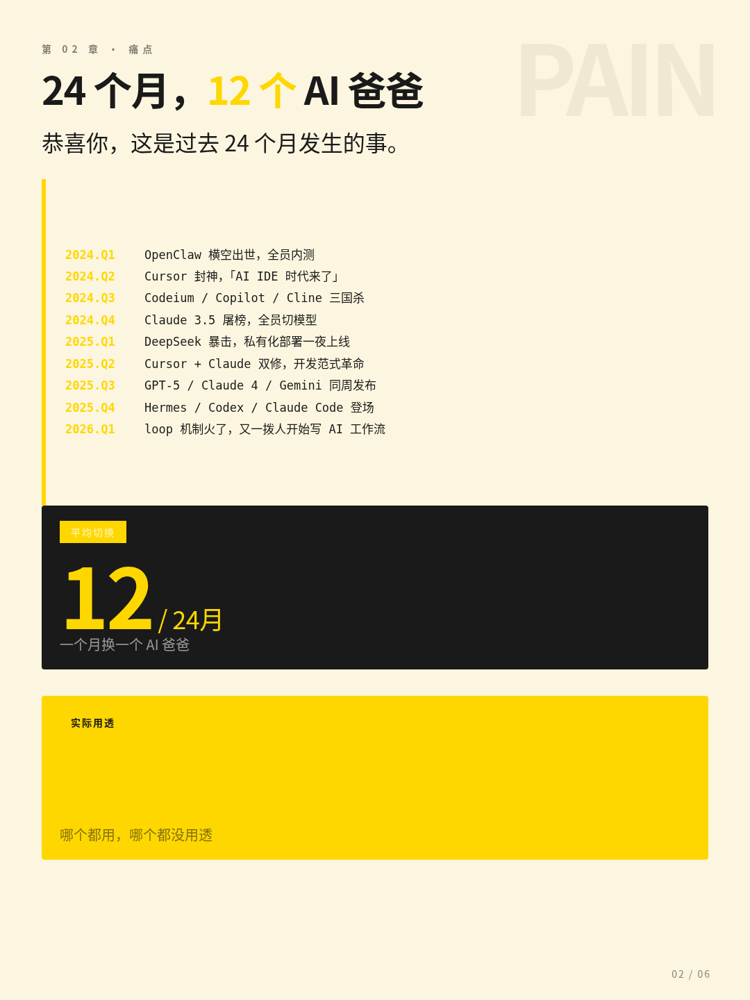
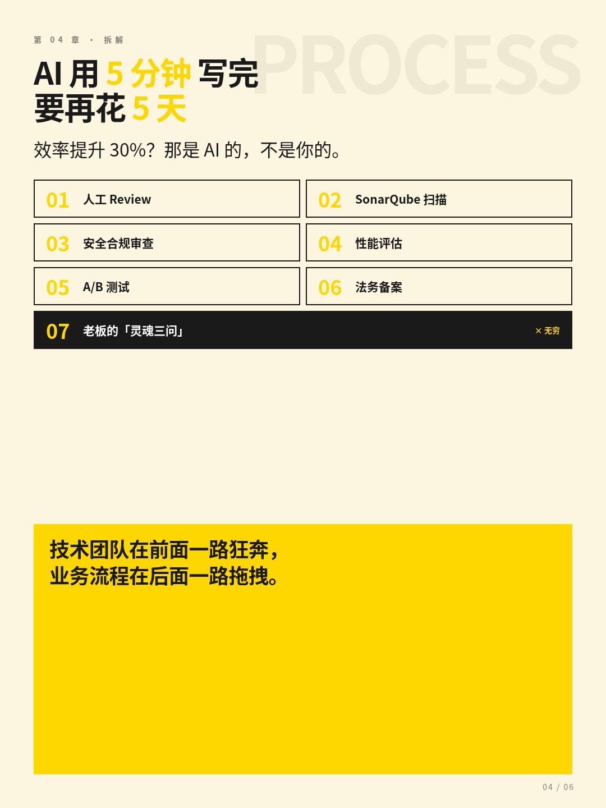
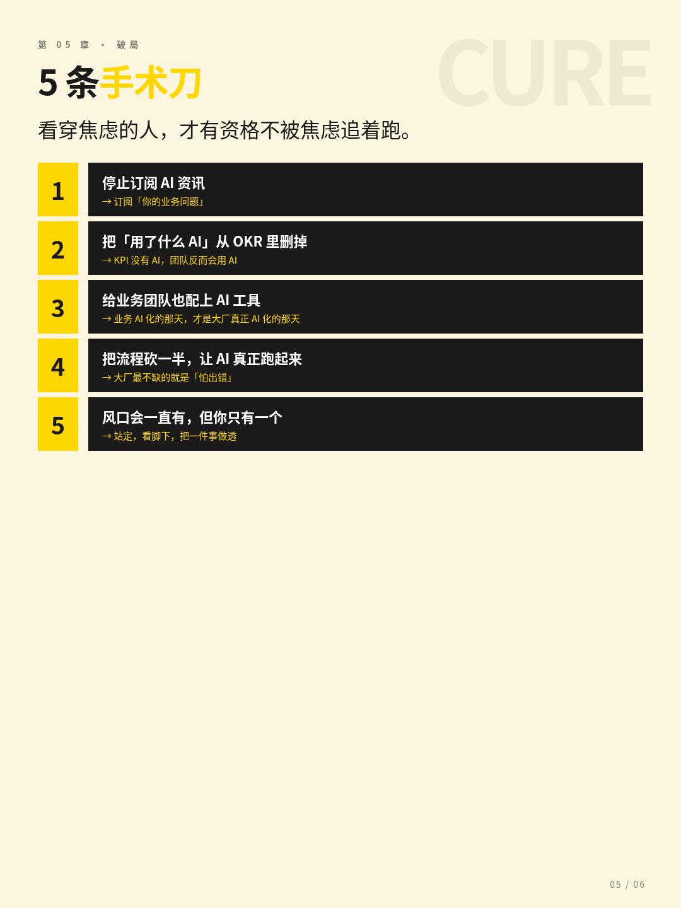

24 个月 · 12 个 AI 爸爸 · 0 个用透
最近每次技术晨会，最新的不是架构演进，是工具八卦。
"听说 X 厂又出了 Hermes 2.0。""GPT 又发新版本了。""你看 Claude Code 的 loop 机制没？""Codex 又更新了。"
我们这群人，头发没见长，知识焦虑又添了三斤。
一、大厂真正的焦虑：不是没护城河，是护城河长别人身上了
大厂这几年最爱说的一个词叫"护城河"。CEO 在台上讲，VP 在台下抄，部门墙上贴满"构建 XX 护城河"的标语。但你仔细一看，那条护城河里灌的不是水，是焦虑。
三年前的护城河是"数据"——"我有用户数据，你没有"；
两年前的护城河是"算法"——"我训的模型比你好"；
去年是"应用场景"——"我有 10 亿用户，你没有"；
今年是……没人说得清。
唯一能确定的是：去年那道护城河，今年已经被填平了。
于是大家集体陷入了一种"护城河饥渴症"：
每三个月挖一条新护城河；
每三个月发现护城河漏水；
每三个月换个地方重新挖。
挖着挖着，回头一看——自己已经站在一片沼泽地里了。
二、从 OpenClaw 到 Hermes：一年追了 12 个"爸爸"

图 · 24 个月，12 个 AI 爸爸 — 全栈时间线
这是过去 24 个月发生的事。
一年，12 个新工具，平均每个月换一个"AI 爸爸"。
我有个朋友在某大厂，2024 年写的 PPT 里"AI 战略合作伙伴"那一栏，换了 7 次。
大厂最擅长的事，从来不是"用好一个工具"，而是"把每个新工具都变成内部 KPI"。
你敢不用 Hermes，下个季度的 OKR 怎么写？
你敢不接入 Codex，年度规划汇报怎么过？
你敢不上 loop 机制，技术雷达图那块就是红的。
所以工具换了，流程没换；流程换了，团队没换；团队换了，业务还是那个业务。
三、AI 工作流 → loop 循环：我们终于把人活成了代码
现在最火的概念叫"AI Agent + Loop"。你给它一个目标，它自己拆解、自己执行、自己反思、自己迭代。
但你把"反思"换成"复盘"，"迭代"换成"再干一遍"——
周一：周会，loop 一次
周二：需求评审，loop 一次
周三：技术评审，loop 一次
周四：测试评审，loop 一次
周五：上线评审，loop 一次
周六：复盘会，loop 一次
周日：被群里@醒，loop 一次
更扎心的是——AI 的 loop 是有目标的，所以它会越来越聪明。而我们的 loop 是没有目标的，所以它只会让我们越来越累。
大厂最讽刺的事：
AI 在追求"通用智能"，而我们这帮人，已经退化成了"通用工具人"。
AI 越聪明，我们越机械。
AI 越自动，我们越重复。
AI 在 loop 里成长，我们在 loop 里腐烂。
我有个朋友在金融大厂，他们最近上线了一套"AI 辅助开发平台"。
他沉默了三秒，说："是的。但是我们同时上线了 7 套配套流程。"

图 · AI 用 5 分钟写完，要再花 5 天走完 7 道审批
AI 用 5 分钟写完的代码，要再花 5 个工作日走完 7 道流程。
效率提升 30%？那是 AI 的，不是你的。
技术团队在前面一路狂奔，业务流程在后面一路拖拽。
前面的人喊"AI 时代来了"，后面的人喊"合规不能破"。
每天在研究 Hermes、Codex、Claude Code、Agent SDK
每周写一篇"AI 落地实践分享"
每个季度发一个"AI 提效 30%"的喜报
每天在群里 @ 你："你用 AI 写代码了吗？"
PRD 写到第 18 版还在改
一个简单的需求评审要拉 12 个会
提测排期已经排到了下个季度
产品经理在群里 @ 你："这个需求很急，明天能上吗？"
这两个宇宙最近的连接方式叫"AI 提效工具"。但你仔细看——技术团队做的提效工具，是给技术团队自己用的；业务团队用的工具，还是三年前那套。
结果是：
之前一个需求 3 周，开发 1 周，评审 2 周；
现在一个需求 3 周，开发 3 天，评审 2 周 4 天。
AI 越强，评审越慢。
技术团队的 AI 化进度 80%，业务团队的 AI 化进度 0%。
然后 CEO 在年会上说："我们是一家 AI-first 的公司。"
行业新工具发布（Hermes / Codex / Claude / GPT-5）
↓
大厂领导"研究"一周，宣布"我们要 All in"
↓
组建专项组、招人、立项、写 PPT
↓
技术团队兴奋，业务团队无所谓
↓
三个月后，新工具又被新工具替代
↓
专项组转型，PPT 重新写
↓
业务团队继续按老路干活
↓
老板说："我们 AI 转型不彻底"
↓
换一种姿势，再来一次
↓
（回到起点，循环加速）
这个循环最可怕的地方在于：每一步都在"做事"，但什么都没做成。
我们做了 AI 平台——没用上
我们引入了 AI 工具——没落地
我们搞了 AI 培训——没学到
我们立了 AI 项目——没交付
我们发了 AI 喜报——没数据
我们不是在做 AI，我们是在做"AI 的仪式感"。
开会叫"AI 战略对齐"。
汇报叫"AI 进度同步"。
评估叫"AI 价值度量"。
失败叫"AI 转型阵痛期"。
——但 PPT 里的 KPI，是一个比一个漂亮。
大厂这两年集体焦虑的根源，不是 AI 发展太快，而是——我们不知道自己是谁了。
"我们是卖广告的"
"我们是做电商的"
"我们是做社交的"
"我们是一家 AI 驱动的科技公司"
"我们用 AI 重塑所有业务"
"我们的使命是 AGI"
但越宏大，越空洞。
越空洞，越焦虑。
越焦虑，越追风口。
越追风口，越不知道自己是谁。
OpenClaw → Hermes → Claude → Codex → ???
吐槽了这么多，不是为了让你绝望。恰恰相反——看穿焦虑的人，才有资格不被焦虑追着跑。

图 · 5 条手术刀 — 停止追风，开始做减法
🔪 1. 停止订阅"AI 资讯"，开始订阅"你的业务问题"
把 RSS、Twitter、即刻、知乎的 AI 资讯流全部取关。1% 的真实落地 > 100% 的纸上 AI 战略。
下次写 OKR 的时候，删掉所有"AI"、"智能化"、"Agent"、"提效 30%"这些词。当 KPI 里没有"AI"两个字，你的团队反而会用 AI。
🔪 3. 给业务团队也配上 AI 工具，不是只给开发配
给他们配 PRD 生成的 AI、配数据分析的 AI、配客服回复的 AI、配会议纪要的 AI。不要等他们"会用了"再配，要配了之后"逼他们用"。
让 AI 生成的代码直接进灰度，让 AI 写的方案直接进评审。不要怕出错。——大厂最不缺的就是"怕出错"。
🔪 5. 接受一个扎心的事实：风口会一直有，但你只有一个
Hermes 之后还会有 Mythos（我编的）、之后还会有 Zephyrus（我也编的）。你追不完的。但你的业务，你的客户，你的团队，是具体的，是有限的，是值得你真正花时间的。
我知道你很累。我知道你的收藏夹里有 200 篇没读完的 AI 工具测评。我知道你的书架上有 5 本没翻过的"AI 时代生存指南"。我知道你的脑子里装满了 Hermes、Codex、Claude、Agent、loop、RAG、AGI……
我也知道你不是不爱学习。你只是被一种集体焦虑裹挟了——
被淘汰的，从来不是"没用 AI"的人。
被淘汰的，是"为了用 AI 而用 AI，最后业务一团糟"的人。
Hermes 不会拯救你，Claude 也不会拯救你，Codex 更不会。
你愿不愿意停下来想一想：
我手里真正的问题是什么？
我真正在乎的客户是谁？
我真正能交付的价值，是什么？
哪怕只是今天，关掉那些 AI 资讯推送，安静地花 30 分钟，重新读一下你上周写的那段代码、那份 PRD、那个方案。
如果你读到了这里，说明这篇文章至少有一句话说进了你心里。请帮我做一件事：
关掉这个页面。
去解决一个具体的、小的、跟 AI 无关的业务问题。
然后，明天再回来。
你没有 AI，也能创造价值。
而这，正是你真正不可替代的地方。
· 本文配图：6 页小绿书版《我们追的不是 AI，是焦虑》
· 下期预告：在一个不肯 AI 化的公司里，偷偷 AI 化自己